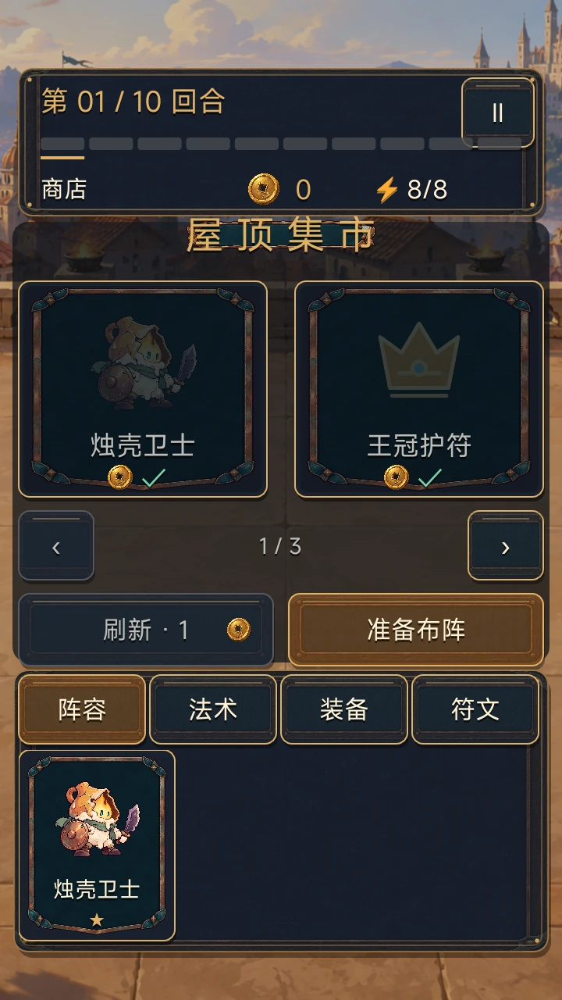
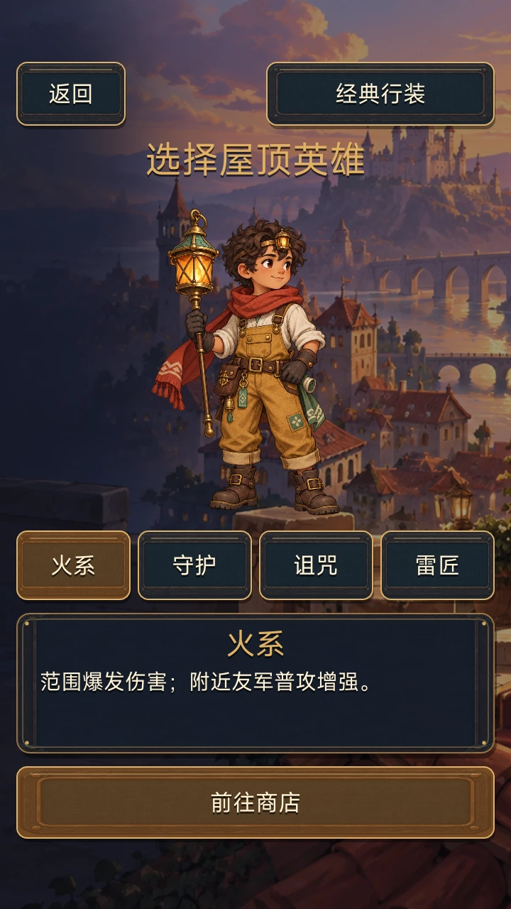
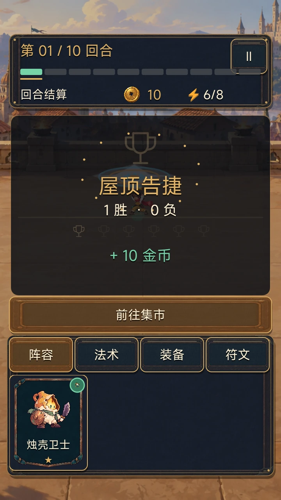
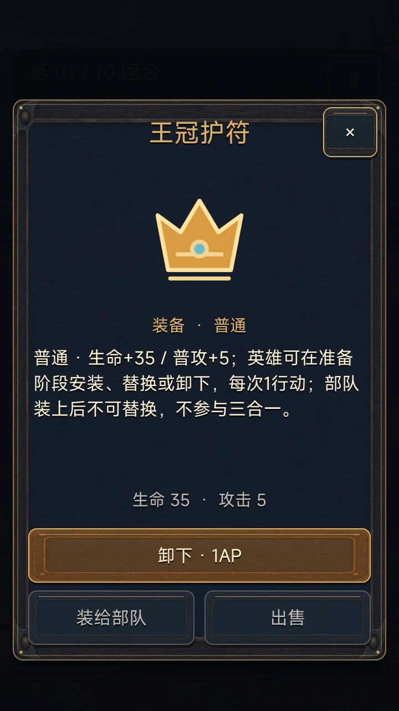
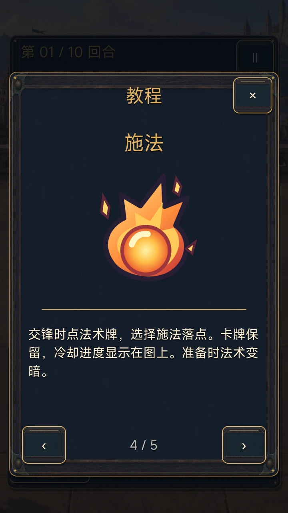
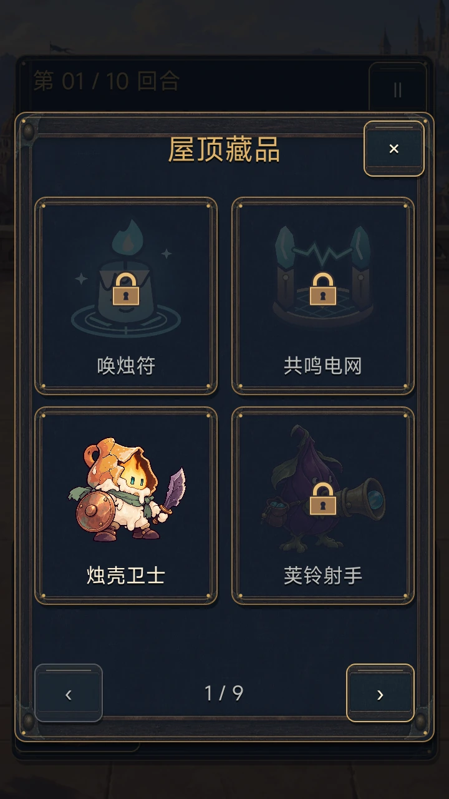

买进来的牌马上可以对照手牌
已购卡牌直接进入商店下方。刷新之前就能核对买到了什么、离合成还差哪张，并决定剩余金币该花在哪。


TAPTAP MAKER / 个人 AI 游戏实践
轻策略 / 自走棋 / 卡牌构筑
把军队摆到屋顶，把陷阱埋在对手经过的格子。等两军贴近，你还可以亲手选时机和落点施法。最多十回合，先赢六场就拿下这趟屋顶之旅。

Godot 桌面原型 · TapTap Maker 竖屏测试阶段
选一位英雄，空手进集市。金币用来买牌或刷新，行动点和格位决定能摆下多少部队、陷阱与装备。准备完成后部队自动交锋，你随战况选择何时、往哪里施放法术。
截图来自 Windows 上运行的 TapTap Maker 竖屏测试版。实体手机兼容性仍待验证。
点击图片可查看原图。





GAMEPLAY / 运行录制
约 20 秒的竖屏测试版录制，展示法术冷却、军团交锋与本轮结算。公开试玩入口待开放。